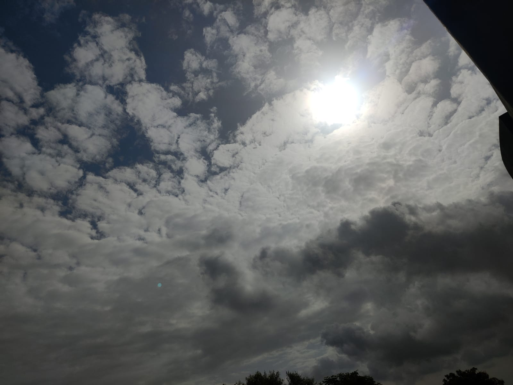

All things considered, I started my vocation as an expert on-screen character, so I think about long shots. What’s more, photography truly occurred by possibility.
I never intended to be an expert photographer. Be that as it may, photography? My granddad, was an exceptionally effective photographer, with undertakings authorized by , and I spent a lot of my youth with him in his darkroom. My dad is a skilled movie executive whose work has been seen at the Venice Film Festival.
My mom, was an effective Ford demonstrate (must be the place I got my dazzling looks). So being around a camera is certainly in my blood. All things considered, I wasn’t motivated. That is to say, where’s the show? Where’s the adulation? Where’s the drape call? I was appreciating achievement in acting, so I didn’t give photography another idea.
That is, until the point when I saw a display by photojournalist ___. At that point, my demeanor started to change. He had a remarkable capacity to catch an individual’s embodiment and to recount a story.
His subjects are constantly delightful on the grounds that they are human. Photos like _____ picture of a model embracing an elephant never truly intrigued me, however, _____’s pictures of mankind moved me. I needed to figure out how to photo individuals personally. Before long it turned into a side interest. At that point, it turned into energy. In any case, I still never figured it would turn into a profession.
